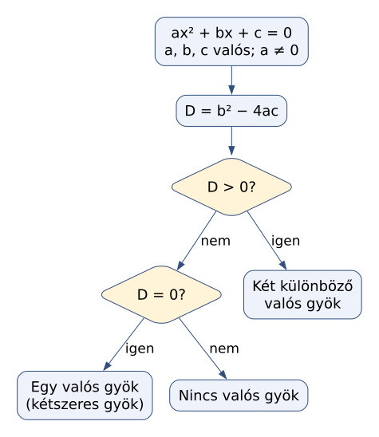
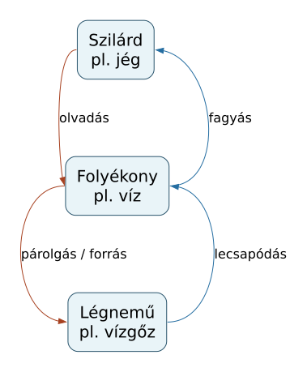
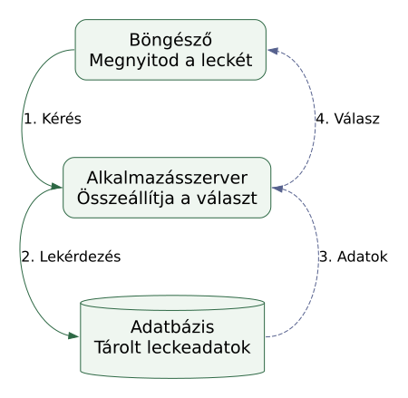
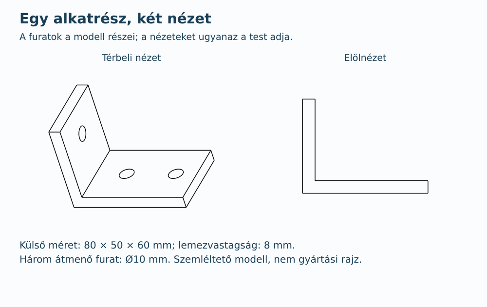
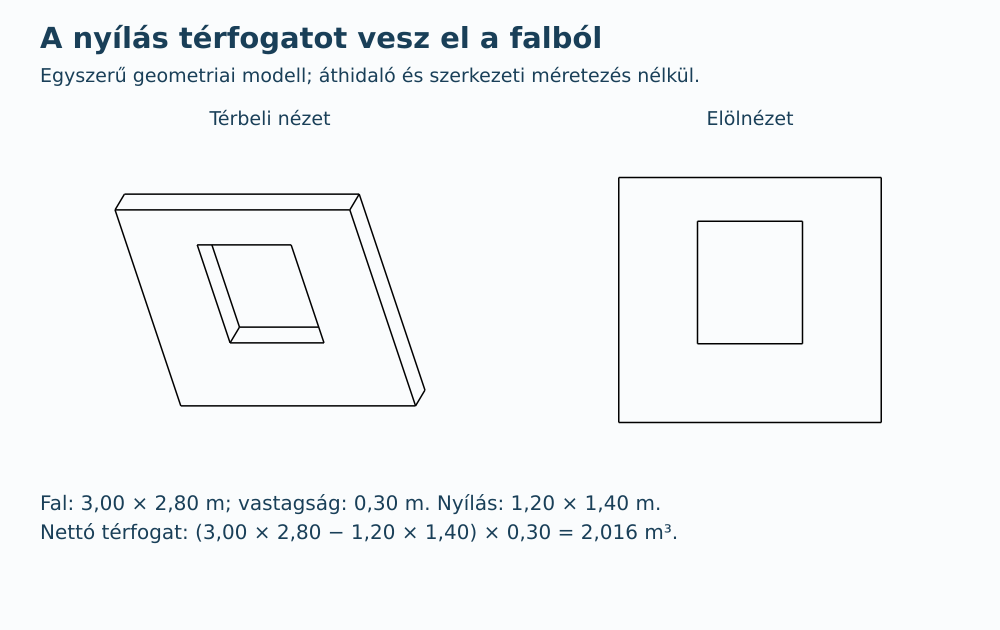
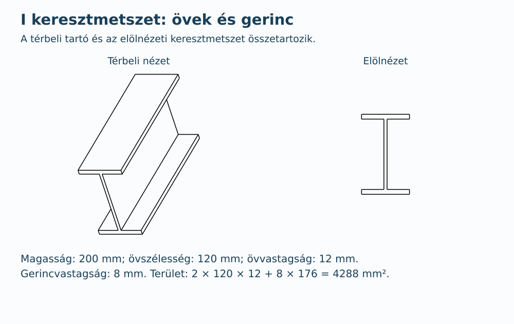
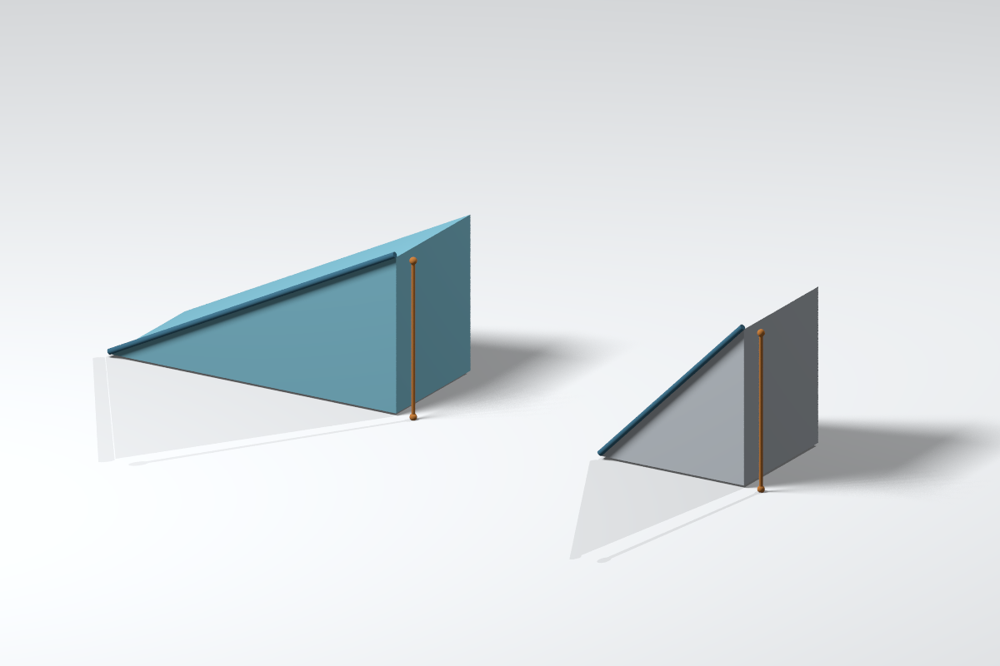
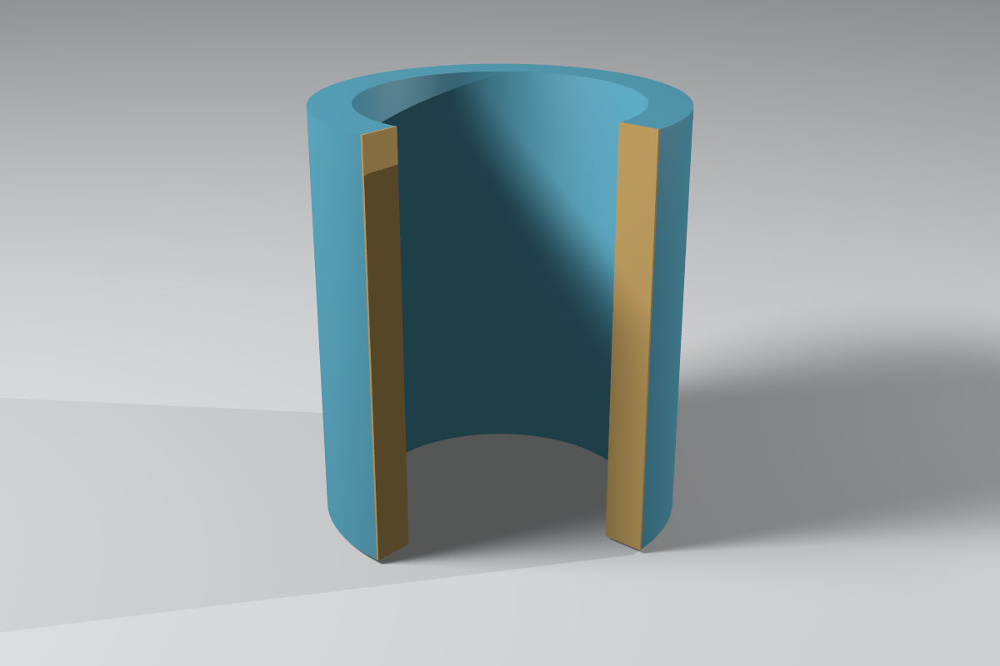
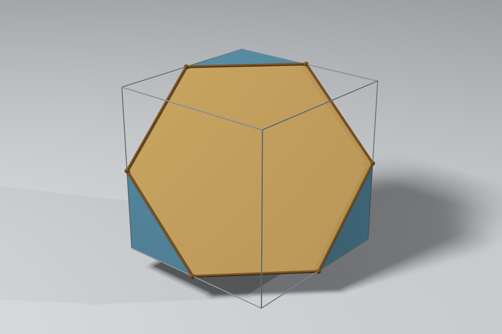

Graphviz · a kapcsolat legyen világos
G1 · MATEMATIKA · DÖNTÉSHány valós megoldás lesz?
Másodfokú egyenletnél a D = b² − 4ac kifejezést diszkriminánsnak nevezzük. Az előjele megmondja, hány különböző valós gyököt keresünk. Az ábra a döntés menetét mutatja; a gyökök értékét még nem számolja ki.

Az „igen” és „nem” ágakat külön követve a feltételek egyik esete sem marad ki. Az a ≠ 0 feltétel biztosítja, hogy az egyenlet valóban másodfokú.
G2 · FIZIKA · ELLENTÉTES FOLYAMATOKUgyanaz az anyag, más halmazállapot.
A nyilak itt tényleges átalakulásokat jelölnek. Az olvadás és a fagyás ugyanazt a két halmazállapotot köti össze, de ellentétes irányban. A párolgás és a forrás egyaránt folyadékból gázba vezető folyamat.

Ez a minta négy folyamatot emel ki. A közvetlen szilárd–gáz átalakulásokat nem ábrázolja; nem teljes halmazállapot-változási térkép.
G3 · INFORMATIKA · KÉRÉS ÉS VÁLASZMi történhet a kattintás után?
Egy adatbázist használó webalkalmazásban a böngésző az alkalmazásszerverhez fordul. A szerver lekéri a szükséges adatokat, majd választ küld a böngészőnek. A sorszámok a példabeli sorrendet mutatják.

A visszatérő adat útja ugyanolyan fontos, mint a kérésé. A szaggatott vonal ezt szín nélkül is megkülönbözteti.
Szemléltető rendszer, nem a jelenlegi jegyzetoldalak tényleges kiszolgálási rajza; nem minden weboldal használ adatbázist.
FreeCAD · egy modell, ellenőrizhető nézetek
C1 · GÉPÉSZET · TÉRBELI ÉS SÍKBELI NÉZETA furat nem csak egy rárajzolt kör.
A konzolból három valódi átmenő furatot vettünk ki. A térbeli nézet segít felismerni az alakot; az elölnézet a külső L alakot mutatja. Ebben a vetületben a furatok takart éleit nem tüntettük fel.

A két nézet ugyanabból a testből készült. A méretek és a kivett furatok térfogata számítással is ellenőrizhetők.
C2 · ÉPÍTÉSTAN · NYÍLÁS ÉS ANYAGMENNYISÉGAz ablak helyén már nincs falanyag.
A 3,00 m széles és 2,80 m magas fal vastagsága 0,30 m. Az 1,20 × 1,40 m-es nyílás a teljes falvastagságon átmegy. A nettó térfogatot a nagy téglatestből kivett kisebb téglatest adja.

Ez geometriai szemléltetés, nem építési vagy statikai terv. Nem mutat áthidalót, anyagspecifikus faljelölést, habarcsot vagy kivitelezési veszteséget.
C3 · TARTÓSZERKEZETEK · KERESZTMETSZETA hosszú tartó végétől az I alakig.
Az I keresztmetszet két vízszintes övből és az őket összekötő gerincből áll. Az anyag területét három, egymást át nem fedő téglalapra bontva számoljuk: két öv és a köztük maradó gerinc.

A gerinc számítási magassága 200 − 2 × 12 = 176 mm. Így az övekhez tartozó anyagot nem számoljuk kétszer.
Ideális, éles sarkú mintaszelvény; nem egy szabványos hengerelt termék méretsora vagy teherbírási vizsgálata.
POV-Ray · most valóban térben
P1 · FIZIKA · AZONOS MAGASSÁG, ELTÉRŐ ÚTA lankásabb lejtőn hosszabb az út.
A két rámpa azonos, 1,50 m-es magasságot ér el; ezt jelölik a narancsszínű szakaszok. A bal oldali vízszintes kiterjedése 3,00 m, a jobb oldalié 1,50 m. A sötét vonal a lejtőn bejárható egyenes utat mutatja.

Pitagorasz-tétellel az utak hossza körülbelül 3,35 m és 2,12 m. A magasság ugyanaz, az út hossza eltér.
A közös párhuzamos vetület megőrzi a méret-összehasonlítást. A rajz geometriai kapcsolatot szemléltet; nem végez súrlódás- vagy erőszámítást.
P2 · GEOMETRIA · BELÜL ÜREGESA külső átmérő még nem a falvastagság.
A cső egy negyedét eltávolítottuk, hogy belássunk. A sárgával kiemelt vágott felületek mutatják az anyag vastagságát. A külső sugár 1,30 egység, a belső 1,00 egység.

A falvastagság a sugarak különbsége: 1,30 − 1,00 = 0,30 egység. Az átmérők különbsége ennek a kétszerese lenne.
A sárga kiemelés magyarázó szín, nem szabványos anyagjelölés. A teljes csőből kivett negyed csak a belső rész láthatóságát szolgálja.
P3 · TÉRGEOMETRIA · MEGLEPŐ SÍKMETSZETLehet hatszög egy kocka metszete?
Igen. A megfelelően választott sík hat él felezőpontján megy át, és szabályos hatszöget metsz ki. Az aranyszínű lap a metszet; a vékony szürke élek az eredeti teljes kockát segítenek elképzelni.

A kocka minden oldallapja négyzet, de egy ferde síkmetszete ettől még lehet hatszög. Nem minden ferde metszet ilyen: a vágósík helyzete számít.
A perspektivikus képen a hatszög nem látszik szabályosnak. A modellben az oldalhosszak egyenlők, a belső szögek 120°-osak.